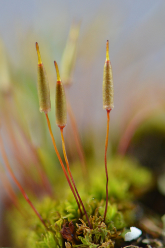

Encalyptaceae
Extinguisher Moss Family
The Encalyptaceae family is most famous for its highly distinctive, large calyptra that completely envelops the capsule, resembling an extinguisher or candle snuffer – hence the common name "Extinguisher Mosses". These acrocarpous mosses are typically found on base-rich soil or rock, particularly calcareous substrates, and are distributed worldwide, especially in temperate and colder regions.
Overview
Encalyptaceae is a relatively small but morphologically unique family of mosses. Its phylogenetic position is debated, sometimes placed in its own order (Encalyptales) or associated with the Pottiales. The family is almost entirely composed of the genus Encalypta, with one other small genus (Bryobrittonia) sometimes included.
The defining characteristic, the large, persistent calyptra covering the entire capsule, makes members of this family unmistakable when fertile. They typically grow in tufts or cushions on soil, especially thin soil over rock, or directly in rock crevices. A strong preference for calcareous or circumneutral substrates is characteristic of most species. They are found across a wide range of latitudes, from temperate zones to arctic and alpine environments.
Quick Facts
- Scientific Name: Encalyptaceae
- Common Name: Extinguisher Moss Family
- Number of Genera: 1-2 (primarily Encalypta)
- Number of Species: Approximately 35
- Distribution: Cosmopolitan, but most common and diverse in Northern Hemisphere temperate, boreal, arctic, and alpine regions.
- Evolutionary Group: Bryophytes - Mosses (Class: Bryopsida, Order: Encalyptales or Pottiales)
Key Characteristics
Growth Form and Habit
Plants are acrocarpous, forming loose to dense tufts or cushions. Stems are erect, simple or sparsely branched. Plants are typically green to yellowish-green.
Leaves
Leaves are typically erect-spreading to spreading when moist, often strongly crisped or contorted when dry. Leaf shape is commonly lingulate (tongue-shaped), spathulate (spatula-shaped), or oblong-lanceolate, usually with a broadly rounded to bluntly pointed apex, which may sometimes end in a short point (apiculus) or occasionally a hairpoint. Margins are typically plane or weakly recurved. The costa (midrib) is single and strong, usually ending just below the apex or percurrent (reaching the apex). Upper leaf cells are typically quadrate to hexagonal, often densely papillose (covered in small bumps) or sometimes smooth; basal cells are usually rectangular and clearer.
Sporophyte (Capsule and Calyptra)
Sporophytes are terminal on the stems. The seta is typically well-developed, erect, reddish or yellowish. The capsule is erect, cylindrical to oblong-cylindrical, and symmetric. When dry and empty, the capsule wall is often distinctly vertically ribbed or striate (though sometimes smooth). An operculum (lid) is present, usually with a long, straight beak (rostrate).
The most unmistakable feature is the calyptra: it is exceptionally large, persistent, and completely covers the capsule like a candle snuffer or extinguisher. It is typically cylindrical or narrowly bell-shaped (campanulate), straw-colored or brownish, smooth or sometimes slightly roughened, and often has a base that is entire, lobed, or fringed (ciliate). The calyptra remains until the capsule is mature or nearly so.
The peristome structure is highly variable within the family and even within species. It can be entirely absent, single (with 16 teeth), or double (with 16 outer teeth and a variously developed inner endostome). This variability is unusual for a single moss family.
Habitat
Predominantly found on soil, particularly thin, bare soil over rock, humus, or in rock crevices. They show a strong preference for calcareous or base-rich substrates (e.g., limestone, basalt, nutrient-rich soils). They occur in a range of environments from exposed rock ledges and tundra to more sheltered woodland banks, from low elevations to high alpine zones.
Field Identification
Identifying Encalyptaceae is very easy when sporophytes with calyptrae are present:
Primary Identification Features
- Large "Extinguisher" Calyptra: The presence of a large, persistent calyptra completely covering the erect capsule is diagnostic. No other moss family has this feature.
Secondary Identification Features (useful when calyptra is absent)
- Habitat: Strong preference for calcareous or base-rich soil or rock.
- Acrocarpous Growth: Forming tufts or cushions.
- Leaf Shape: Lingulate to spathulate leaves, often crisped when dry.
- Strong Costa: Midrib usually prominent and ending near the apex.
- Ribbed Capsules: Mature capsules (after calyptra falls) are often vertically ribbed or striate.
Seasonal Identification Tips
- Sporophyte Season: The characteristic calyptra is most visible when capsules are developing and maturing, often in spring and summer in temperate regions.
- Year-Round Gametophytes: The vegetative tufts can be found year-round, but identification without the calyptra relies on habitat and leaf features, which can overlap with Pottiaceae.
Common Confusion Points
- With Calyptra Present: Unmistakable.
- Without Calyptra (Gametophyte Only): Can be confused with members of the Pottiaceae family (e.g., Tortula, Syntrichia, Bryoerythrophyllum), which often grow in similar calcareous habitats and can have somewhat similar leaf shapes (though Pottiaceae often have hair points or strongly recurved margins). Microscopic examination of leaf cells (often papillose in both) or finding old, ribbed capsules can help. However, positive identification often requires finding the unique calyptra.
Field Guide Quick Reference
Look For:
- Large calyptra covering entire capsule (like an extinguisher)
- Acrocarpous tufts on calcareous soil/rock
- Leaves lingulate/spathulate, often crisped dry
- Capsule erect, often ribbed
Key Variations:
- Genus Encalypta
- Calyptra base entire, lobed, or fringed
- Peristome absent, single, or double
Notable Examples
The genus Encalypta contains several widespread and recognizable species.

Encalypta ciliata
Fringed Extinguisher Moss
A common species found on soil over rock and in crevices, often on non-calcareous substrates more readily than other species. It forms yellowish-green tufts. It is easily identified when fertile by its large calyptra which has a distinctly fringed (ciliate) base. The capsule typically has a double peristome.

Encalypta streptocarpa
Spiral Extinguisher Moss
A robust species typically found on calcareous rocks, mortar, or base-rich soil. It forms dense, dark green tufts. Its leaves are lingulate and strongly crisped when dry. The name "streptocarpa" refers to its mature capsules which are strongly ribbed and often slightly twisted spirally. The calyptra base is usually entire or lobed, not fringed. This species typically lacks a peristome.
Phylogeny and Classification
The phylogenetic placement of Encalyptaceae is debated. Its unique calyptra and highly variable peristome structure have led many bryologists to place it in its own distinct order, Encalyptales. This emphasizes its morphological isolation from other moss groups.
However, some molecular studies and morphological similarities (like preference for calcareous substrates and certain leaf cell features) suggest a relationship with the order Pottiales. In some classifications, it is included within or placed near the Pottiales. Regardless of its exact ordinal rank, it represents a well-defined lineage characterized by the remarkable extinguisher-like calyptra.
Position in Plant Phylogeny
- Kingdom: Plantae
- Division: Bryophyta (Mosses)
- Class: Bryopsida
- Order: Encalyptales (or Pottiales)
- Family: Encalyptaceae
Evolutionary Significance
The Encalyptaceae family is significant for:
- Extreme Calyptra Development: Showcasing a unique and highly specialized evolutionary modification of the calyptra, likely providing extended protection to the developing sporophyte.
- Peristome Lability: Exhibiting remarkable variation in peristome presence and structure (absent, single, double) within a single family/genus, offering insights into the evolution of these spore-dispersal structures.
- Adaptation to Calcareous Habitats: Being a characteristic component of the bryophyte flora on base-rich substrates worldwide.